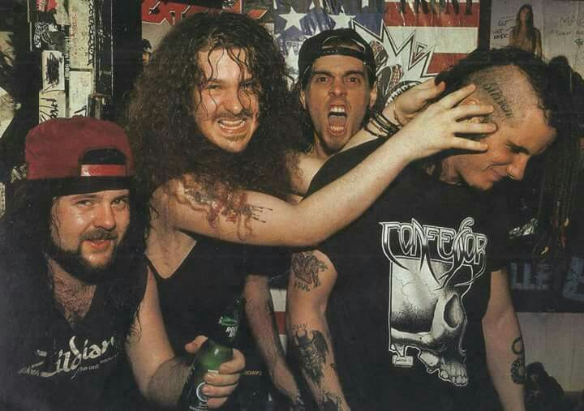
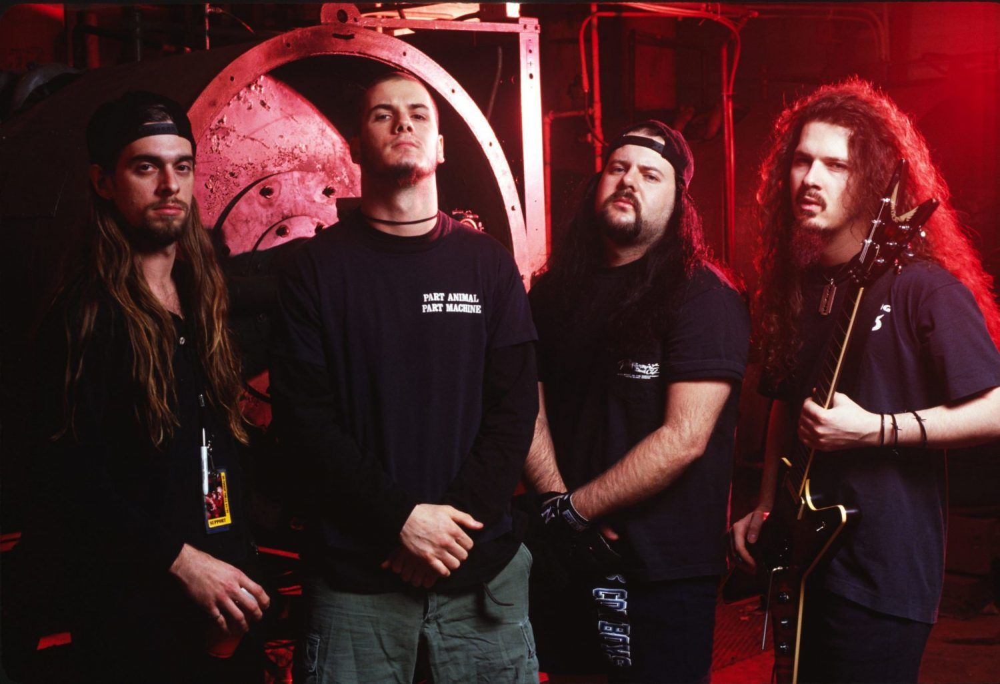
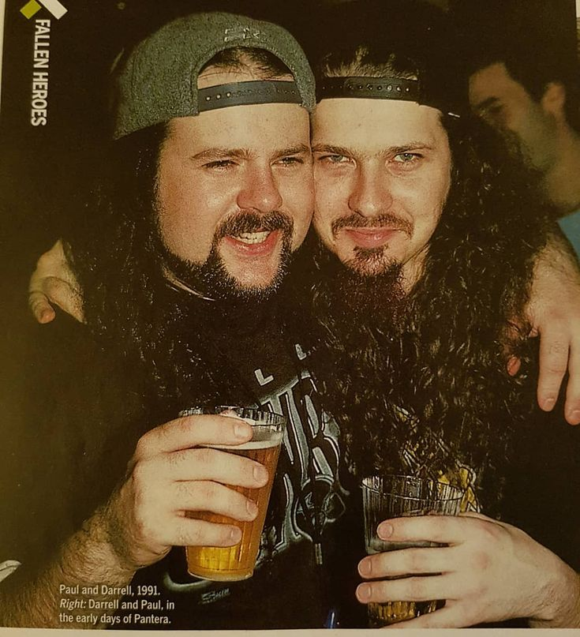

ІСТОРІЯ ГУРТУ
Шлях від глем-металу 80-х до абсолютного домінування на світовій метал-сцені
Ранні роки та епоха глем-металу
Гурт заснували в Арлінгтоні (Техас) брати Ебботт: гітарист «Dimebag» Даррелл та барабанщик Вінні Пол. На ранньому етапі Pantera грала яскравий глем-метал і хард-рок. Все змінилося у 1987 році з приходом Філа Ансельмо, який приніс у звучання гурту справжню важкість та агресію.
Народження Groove Metal та прорив
Альбом «Cowboys from Hell» (1990) став справжнім вибухом та офіційним відліком нової ери. Pantera сформувала унікальний стиль groove metal. Слідом вийшов культовий «Vulgar Display of Power» (1992) з гімнами «Walk» та «Mouth for War», а альбом «Far Beyond Driven» (1994) очолив чарт Billboard 200.

Пік важкості та розпад
Випустивши експериментальні та ще більш темні альбоми «The Great Southern Trendkill» (1996) та «Reinventing the Steel» (2000), гурт досяг вершини екстремальної музики. Однако внутрішні конфлікти та паралельні проекти учасників призвели до офіційного розпаду гурту у 2003 році.

Безсмертна спадщина
Трагічна загибель Даймбега Даррелла у 2004 році та смерть Вінні Пола у 2018-му назавжди закрили можливість возз'єднання класичного складу. Проте рифи Даймбега та звук Pantera залишаються золотим стандартом для кількох поколінь важкої музики.
